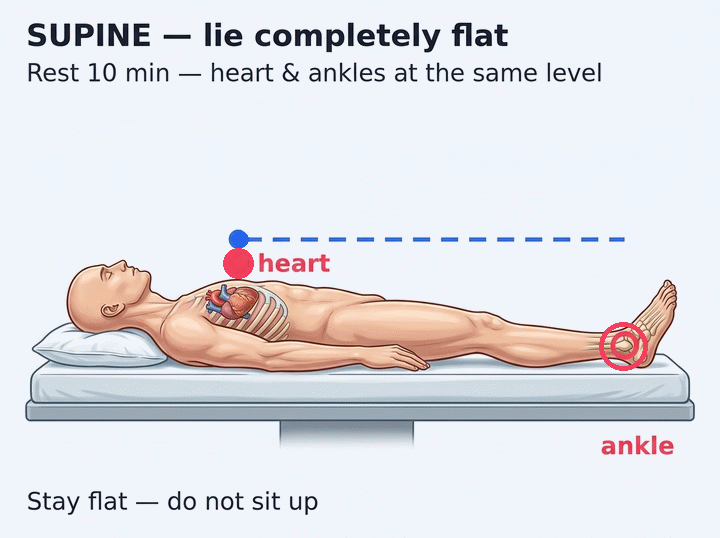
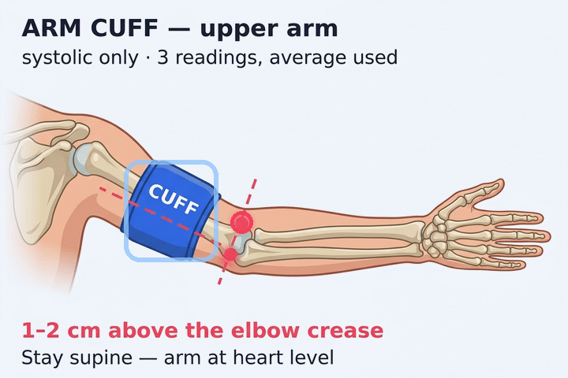
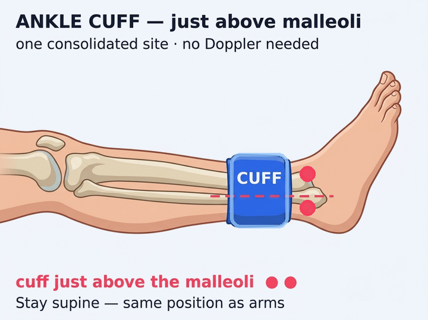

Setup · measurement method
How will you measure?
Choose your device. This is an at-home setup: the person being measured must lie completely flat (supine), well rested and calm.
Rest countdown — stay flat & still
Ready — lie flat, then press Start Measurement.
At-home positioning checklist
- Lie completely flat (supine) — legs uncrossed, arms at heart level.
- Rest a full 10 minutes before the first BP reading. Do not sit up — stay flat so your ankles and heart are at the same level.
- Stay calm and quiet — no talking or moving during readings.
- Use the correct cuff size; arm cuff 1–2 cm above the elbow crease.
- Ankle cuff on the lower leg just above the malleoli (ankle bones) — no Doppler needed.
- Take 3 readings per site; the app uses the average.

Supine — heart & ankles level.
Select Automatic or Manual above, then press Start Measurement to begin the 10:00 rest timer — you'll advance automatically, or continue manually whenever ready.
Right arm
Right Arm Pressure (Brachial Artery · 3 readings)
Enter systolic (top number) only, 3 readings. The app uses the average of the trio. The higher of the two arm averages becomes the reference for the ABI calculation.
Arm cuff placement
- Stay supine, arm at heart level, correct cuff size.
- Cuff on the upper arm, 1–2 cm above the elbow crease.
- Wait ~1 minute between the 3 readings.
- Record the systolic (top) number only.

Cuff 1–2 cm above elbow crease.
Right Arm mmHg · systolic
avg —Left arm
Left Arm Pressure (Brachial Artery · 3 readings)
Enter systolic (top number) only, 3 readings. The app uses the average of the trio. The higher of the two arm averages becomes the reference for the ABI calculation.
Arm cuff placement
- Stay supine, arm at heart level, correct cuff size.
- Cuff on the upper arm, 1–2 cm above the elbow crease.
- Wait ~1 minute between the 3 readings.
- Record the systolic (top) number only.
Cuff 1–2 cm above elbow crease.
Left Arm mmHg · systolic
avg —Right ankle
Right Ankle Pressure (consolidated · cuff just above malleoli)
One consolidated series — no hand-held Doppler, no DP/PT split. Take 3 systolic readings; the average is used.
Right ankle cuff placement
- Stay supine — same position as arms.
- Cuff snug on the lower leg just above the malleoli (ankle bones).
- No Doppler probe needed — one consolidated reading site.
- The average of the 3 readings is used.

Cuff just above the malleoli.
Right Ankle mmHg · systolic
avg —Left ankle
Left Ankle Pressure (consolidated · cuff just above malleoli)
Same consolidated protocol — cuff just above the malleoli, 3 systolic readings, average kept. No Doppler.
Left ankle cuff placement
- Same supine position as the right leg.
- Cuff just above the malleoli, same cuff size.
- Wait ~1 minute between the 3 readings.
- The average of the 3 readings is used.
Cuff just above the malleoli.
Left Ankle mmHg · systolic
avg —Results · analysis
Results & Analysis
Right Leg ABI
—Left Leg ABI
—Categories are wellness labels for self-tracking only — not diagnostic thresholds. If you notice symptoms (leg pain when walking, non-healing sores, cold/pale feet), seek professional care promptly.
Session history
📍 Sessions are stored only in this browser on this device (localStorage). Nothing is uploaded — there are no servers, no accounts, and no cloud copy. Clearing browser data will delete them.